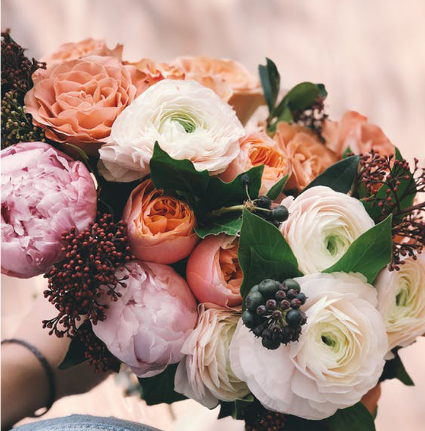

We organise and design personalised weddings, and for this reason, we offer different types of services, depending on your needs. We look after every single detail so you don't need to worry about anything. There is nothing that we can't handle. We look after everything with love, passion and creativity so you forget about the stress and enjoy your big day!
contact usThe Planner does its best for your beautiful and perfect wedding. We offer customized services for our customers, including wedding planning. The following is a list for your smooth wedding.
book nowWe help our couples from start to finish. We will make sure you enjoy the planning since day one, stress-free, and picking the best and right suppliers for you in order to have your dream wedding.
Venue sourcing, choice of suppliers, budget management, decoration, logistics, coordination... We look after everything and your only task is to enjoy the process and the wedding day. Because you just have one chance to get it right, let's make the best team.
Do you have everything under control and want some help making sure everything you have worked for goes to plan? Our team is ready to step up and help you make the most of your day.
A month before the wedding the coordination team will have a meeting with you both to take over with the planning. We will contact all the suppliers, arrange the schedule of the day and be your eyes and hands on the day to make sure everything runs smooth and that your only task is to enjoy, dance and eat. *Limited to a few coordinations per year.
For those couples who are not sure about working with a wedding planner and need just a first push finding the perfect venue, we have a service for you.
We will arrange a first meeting to meet you and understand your needs. The team will then create a list of the perfect venues for you with all the details and information you will need to make the decision. We will visit them with you and help with the paperwork and be by your side until the perfect wedding venue is secured.
If you would like to plan your wedding but just need someone to advice you with a few details, our team can help. The pre-wedding photography consultation is simply a session where we both get a chance to connect with each other, learn about each other, and discuss expectations
This consultation does not have to be a formal meeting but can be more relaxed and informal. It can happen either face to face or virtually. We have different options so let's arrange a call to see how best we can help.
Do you need a personalised service? Arrange a consultation call with the team and we will be happy to discuss any questions you might have.
Most weddings include exchanging a pair of vows, giving gifts (donations, rings, symbols, flowers, money, dresses), and public declarations by an authority or officiant. We will outline the progress of a general or religious wedding and refer to the readings and music you have decided to include.
Turning 300 hours of stressful wedding planning into 30 hours of fun. Believe us when we say that organising a wedding takes time and it's not always fun. We don't want you to have fun just on the wedding day (which you will!) but enjoy the whole process since day one.
Turning 300 hours of stressful wedding planning into 30 hours of fun. Believe us when we say that organising a wedding takes time and it's not always fun. We don't want you to have fun just on the wedding day (which you will!) but enjoy the whole process since day one.
Of course no! We do love national weddings and we are always happy to help Spanish couples to make their dream wedding happen.
Each wedding will have a team of 2 wedding planners that will help you through the whole process. On the wedding day, depend on the size and characteristics of your wedding, a bigger team might be required but you will always be in the best hands.
From start to finish. We help our couples as much or as little as they want. Some couples want us to be involved from start to finish, some other just need a little push. Either way, we will be holding your hand making sure you enjoy the planning process as much as you will do the wedding itself.
Although we specialised in weddings in Spain, our team also work in the United Kingdom and Italy, so we travel where our couples need us to.
We don't have a set number of suppliers that we work with. Each couple is different and that means not all the suppliers fit all types of clients. We help our couples finding the best match for them making sure we always work with professionals that can deliver to the standards we expect of ourselves.
We always love to meet our potential clients through a video call or coffee if possible. It's super important for the both of us to get a feeling as we will be working together for over a year, so a connection with your planner is essential. We explain in detail how we work and give you tips. Here is when the spark happens and we fall in love with our future couples.